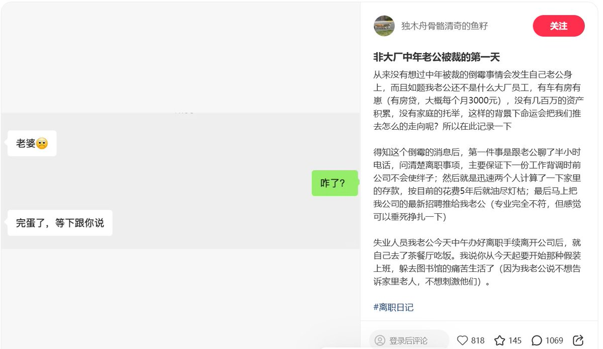
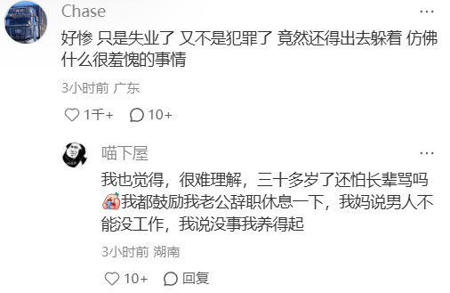
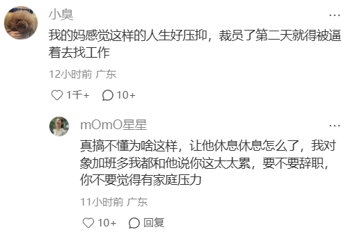
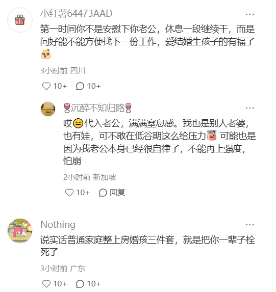

大狐帝国史官邹智萱（笔名段歌文）
@Rococo90933671
评论区的观感还是不错的。这件事本身对于一个男人来说真的太窒息了。
普通家庭摊上房婚孩三件套，真就是被栓死了。失业了要躲着家里长辈出去假装上班，裁员第二天就要出去找工作因为企业不接受空窗期。
人真是被异化到了极致，生命都没这重要。因为这都不是为自己而活了，而是为了养育下一代、反哺上一代的无尽循环……跳出工作仿佛死罪。
不用等下班的时候，一看，TM65岁了（没这么年轻）。
和已经上班快两年的高中同学讨论后，他的观点是：买个小房然后和“正常”的对象结婚再丁克，应该是最爽的



